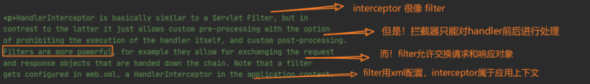

Java Web
Servlet 是单例吗？
Servlet 本身只是一个Java，并不是单例结构，所以 Servlet 是不是单例最终取决于运行它的 Web 容器。
- 注解加载时默认是单例的。
- 如果一个 Servlet 没有被部署在分布式的环境中，一般 web.xml 中声明的一个 Servlet 只对应一个实例。
- 如果在 web.xml 中声明了几次，即使同一个 Servlet ，如果声明多次，也会生成多个实例。
单实例多线程
Servlet 容器默认是采用 单实例多线程 的方式处理多个请求的：
- 当web服务器启动的时候（或客户端发送请求到服务器时），Servlet就被加载并实例化(只存在一个Servlet实例)；
- 容器初始化 Servlet 主要就是读取配置文件（例如 tomcat 可以通过 Servlet.xml 的设置线程池中线程数目）初始化每个参数值等等。
- 当请求到达时，Servlet 容器通过调度线程（Dispatcher Thread）调度它管理下线程池中等待执行的线程（Worker Thread）给请求者；
- 线程执行 Servlet 的 service 方法；
- 请求结束，放回线程池，等待被调用；
注意：避免使用实例变量（成员变量），因为如果存在成员变量，可能发生多线程同时访问该资源时，都来操作它，造成数据的不一致，因此产生线程安全问题。
单实例有状态
只能说 web 容器对 Servlet 实例化了一次。Servlet 只是一个普通的类，它也有自已的构造函数，可以用 new 的方式创建出多个 Servlet 的实例。Servlet 能够正常地处理 web 请求，需要交给 web 服务器（或者叫Servlet/jsp容器）来进行管理，比如说 tomcat。tomcat 通过配置文件获取映射信息，然后只会在第一次生成 Servlet 的实例并将其缓存起来，下次再次请求，同样是获取的这个实例。所以，不要把数据用成员属性进行保存，不要让Servlet有状态。
Servlet是单例还是多例_梁云亮的博客-CSDN博客_servlet是单例还是多例
servlet是否单例模式？ servlet是否线程安全？_java叶新东老师的博客-CSDN博客_servlet是单例,线程不安全
多线程下 Servlet 怎么保证数据安全的？
一般是单例，我们用的都是 Servlet 的 service，一般不包含实例变量，只有共享代码，所以一般是安全的。
如果有实例变量的话可以使用 synchronized 关键字进行加锁。
当 Servlet 实现 SingleThreadModel 接口后，Tomcat 会为该 Servlet建一个对象池，这是享元模式。
享元模式：避免大量拥有相同内容的小类的开销（如耗费内存），使大家共享一个类（元类）
Servlet 的生命周期？
init一般在 web 容器初始化，或第一次调用 Servlet 时。service提供服务destroy终结- 回收
Servlet/filter作用、原理、配置
- Servlet
Servlet（Server Applet）是Java Servlet的简称，称为小服务程序或服务连接器，用Java编写的服务器端程序，具有独立于平台和协议的特性，主要功能在于交互式地浏览和生成数据，生成动态Web内容。
狭义的Servlet是指Java语言实现的一个接口，广义的Servlet是指任何实现了这个Servlet接口的类，一般情况下，人们将Servlet理解为后者。Servlet运行于支持Java的应用服务器中。从原理上讲，Servlet可以响应任何类型的请求，但绝大多数情况下Servlet只用来扩展基于HTTP协议的Web服务器。
- Filter
Servlet中的过滤器Filter是实现了javax.Servlet.Filter接口的服务器端程序，主要的用途是过滤字符编码、做一些业务逻辑判断等。其工作原理是，只要你在web.xml文件配置好要拦截的客户端请求，它都会帮你拦截到请求，此时你就可以对请求或响应(Request、Response)统一设置编码，简化操作；同时还可进行逻辑判断，如用户是否已经登录、有没有权限访问该页面等等工作。它是随你的web应用启动而启动的，只初始化一次，以后就可以拦截相关请求，只有当你的web应用停止或重新部署的时候才销毁。
package com.hello.web.listener;
import java.io.IOException;
import javax.servlet.*;
import javax.servlet.http.HttpServletRequest;
import javax.servlet.http.HttpServletResponse;
// 主要目的：过滤字符编码；其次，做一些应用逻辑判断等.
// Filter跟web应用一起启动
// 当web应用重新启动或销毁时，Filter也被销毁
public class MyCharsetFilter implements Filter {
private FilterConfig config = null;
public void destroy() {
System.out.println("MyCharsetFilter准备销毁...");
}
public void doFilter(ServletRequest arg0, ServletResponse arg1,FilterChain chain) throws IOException, ServletException {
// 强制类型转换
HttpServletRequest request = (HttpServletRequest) arg0;
HttpServletResponse response = (HttpServletResponse) arg1;
// 获取web.xm设置的编码集，设置到Request、Response中
request.setCharacterEncoding(config.getInitParameter("charset"));
response.setContentType(config.getInitParameter("contentType"));
response.setCharacterEncoding(config.getInitParameter("charset"));
// 将请求转发到目的地
chain.doFilter(request, response);
}
public void init(FilterConfig arg0) throws ServletException {
this.config = arg0;
System.out.println("MyCharsetFilter初始化...");
}
}
<filter>
<filter-name>filter</filter-name>
<filter-class>dc.gz.filters.MyCharsetFilter</filter-class>
<init-param>
<param-name>charset</param-name>
<param-value>UTF-8</param-value>
</init-param>
<init-param>
<param-name>contentType</param-name>
<param-value>text/html;charset=UTF-8</param-value>
</init-param>
</filter>
<filter-mapping>
<filter-name>filter</filter-name>
<!-- * 代表截获所有的请求 或指定请求，如/test.do /xxx.do -->
<url-pattern>/*</url-pattern>
</filter-mapping>
spring中web.xml所包含的配置和作用：
<?xml version="1.0" encoding="UTF-8"?>
<web-app version="3.0" xmlns="http://java.sun.com/xml/ns/javaee"
xmlns:xsi="http://www.w3.org/2001/XMLSchema-instance"
xsi:schemaLocation="http://java.sun.com/xml/ns/javaee http://java.sun.com/xml/ns/javaee/web-app_3_0.xsd">
<!-- 在Spring框架中是如何解决从页面传来的字符串的编码问题的呢？
下面我们来看看Spring框架给我们提供过滤器CharacterEncodingFilter
这个过滤器就是针对于每次浏览器请求进行过滤的，然后再其之上添加了父类没有的功能即处理字符编码。
其中encoding用来设置编码格式，forceEncoding用来设置是否理会
request.getCharacterEncoding()方法，设置为true则强制覆盖之前的编码格式。-->
<filter>
<filter-name>characterEncodingFilter</filter-name>
<filter-class>org.springframework.web.filter.CharacterEncodingFilter</filter-class>
<init-param>
<param-name>encoding</param-name>
<param-value>UTF-8</param-value>
</init-param>
<init-param>
<param-name>forceEncoding</param-name>
<param-value>true</param-value>
</init-param>
</filter>
<filter-mapping>
<filter-name>characterEncodingFilter</filter-name>
<url-pattern>/*</url-pattern>
</filter-mapping>
<!-- 项目中使用Spring 时，applicationContext.xml配置文件中并没有BeanFactory，要想在业
务层中的class 文件中直接引用Spring容器管理的bean可通过以下方式-->
<!--1、在web.xml配置监听器ContextLoaderListener-->
<!--ContextLoaderListener的作用就是启动Web容器时，自动装配ApplicationContext的配置信息。因为
它实现了ServletContextListener这个接口，在web.xml配置这个监听器，启动容器时，就会默认执行它实现的方法。
使用servletContextListener接口，开发者能够在为客户端请求提供服务之前向servletContext中添任何对象，
这个对象在servletcontxxt启动的时候被初始化，然后在ervletContext的整个运行期间都是可见的。
在ContextLoaderListener中关联了ContextLoader这个类，所以整个加载配置过程由ContextLoader来完成。
它的API说明
第一段说明ContextLoader可以由 ContextLoaderListener和ContextLoaderServlet生成。
如果查看ContextLoaderServlet的API，可以看到它也关联了ContextLoader这个类而且它实现了HttpServlet这个接口
第二段，ContextLoader创建的是 XmlWebApplicationContext这样一个类，它实现的接口是
WebApplicationContext->ConfigurableWebApplicationContext->ApplicationContext->
BeanFactory，这样一来spring中的所有bean都由这个类来创建
IUploaddatafileManager uploadmanager = (IUploaddatafileManager) ContextLoaderListener
.getCurrentWebApplicationContext().getBean("uploadManager");
-->
<listener>
<listener-class>org.springframework.web.context.ContextLoaderListener</listener-class>
</listener>
<!--2、部署applicationContext的xml文件-->
<!--如果在web.xml中不写任何参数配置信息，默认的路径是"/WEB-INF/applicationContext.xml，
在WEB-INF目录下创建的xml文件的名称必须是applicationContext.xml。
如果是要自定义文件名可以在web.xml里加入contextConfigLocation这个context参数：
在<param-value> </param-value>里指定相应的xml文件名，如果有多个xml文件，可以写在一起并以“,”号分隔。
也可以这样applicationContext-*.xml采用通配符，比如这那个目录下有applicationContext-ibatis-base.xml，
applicationContext-action.xml，applicationContext-ibatis-dao.xml等文件，都会一同被载入。
在ContextLoaderListener中关联了ContextLoader这个类，所以整个加载配置过程由ContextLoader来完成。-->
<context-param>
<param-name>contextConfigLocation</param-name>
<param-value>classpath:spring/applicationContext.xml</param-value>
</context-param>
<!--如果你的DispatcherServlet拦截"/"，为了实现REST风格，拦截了所有的请求，那么同时对*.js,*.jpg等静态文件的访问也就被拦截了。-->
<!--方案一：激活Tomcat的defaultServlet来处理静态文件-->
<!--要写在DispatcherServlet的前面， 让 defaultServlet先拦截请求，这样请求就不会进入Spring了，我想性能是最好的吧。-->
<servlet-mapping>
<servlet-name>default</servlet-name>
<url-pattern>*.css</url-pattern>
</servlet-mapping>
<servlet-mapping>
<servlet-name>default</servlet-name>
<url-pattern>*.swf</url-pattern>
</servlet-mapping>
<servlet-mapping>
<servlet-name>default</servlet-name>
<url-pattern>*.gif</url-pattern>
</servlet-mapping>
<servlet-mapping>
<servlet-name>default</servlet-name>
<url-pattern>*.jpg</url-pattern>
</servlet-mapping>
<servlet-mapping>
<servlet-name>default</servlet-name>
<url-pattern>*.png</url-pattern>
</servlet-mapping>
<servlet-mapping>
<servlet-name>default</servlet-name>
<url-pattern>*.js</url-pattern>
</servlet-mapping>
<servlet-mapping>
<servlet-name>default</servlet-name>
<url-pattern>*.html</url-pattern>
</servlet-mapping>
<servlet-mapping>
<servlet-name>default</servlet-name>
<url-pattern>*.xml</url-pattern>
</servlet-mapping>
<servlet-mapping>
<servlet-name>default</servlet-name>
<url-pattern>*.json</url-pattern>
</servlet-mapping>
<servlet-mapping>
<servlet-name>default</servlet-name>
<url-pattern>*.map</url-pattern>
</servlet-mapping>
<!--使用Spring MVC,配置DispatcherServlet是第一步。DispatcherServlet是一个Servlet,,所以可以配置多个DispatcherServlet-->
<!--DispatcherServlet是前置控制器，配置在web.xml文件中的。拦截匹配的请求，Servlet拦截匹配规则要自已定义，把拦截下来的请求，依据某某规则分发到目标Controller(我们写的Action)来处理。-->
<servlet>
<servlet-name>DispatcherServlet</servlet-name><!--在DispatcherServlet的初始化过程中，框架会在web应用的 WEB-INF文件夹下寻找名为[servlet-name]-servlet.xml 的配置文件，生成文件中定义的bean。-->
<servlet-class>org.springframework.web.servlet.DispatcherServlet</servlet-class>
<!--指明了配置文件的文件名，不使用默认配置文件名，而使用dispatcher-servlet.xml配置文件。-->
<init-param>
<param-name>contextConfigLocation</param-name>
<!--其中<param-value>**.xml</param-value> 这里可以使用多种写法-->
<!--1、不写,使用默认值:/WEB-INF/<servlet-name>-servlet.xml-->
<!--2、<param-value>/WEB-INF/classes/dispatcher-servlet.xml</param-value>-->
<!--3、<param-value>classpath*:dispatcher-servlet.xml</param-value>-->
<!--4、多个值用逗号分隔-->
<param-value>classpath:spring/dispatcher-servlet.xml</param-value>
</init-param>
<load-on-startup>1</load-on-startup><!--是启动顺序，让这个Servlet随Servletp容器一起启动。-->
</servlet>
<servlet-mapping>
<!--这个Servlet的名字是dispatcher，可以有多个DispatcherServlet，是通过名字来区分的。每一个DispatcherServlet有自己的WebApplicationContext上下文对象。同时保存的ServletContext中和Request对象中.-->
<!--ApplicationContext是Spring的核心，Context我们通常解释为上下文环境，我想用“容器”来表述它更容易理解一些，ApplicationContext则是“应用的容器”了:P，Spring把Bean放在这个容器中，在需要的时候，用getBean方法取出-->
<servlet-name>DispatcherServlet</servlet-name>
<!--Servlet拦截匹配规则可以自已定义，当映射为@RequestMapping("/user/add")时，为例,拦截哪种URL合适？-->
<!--1、拦截*.do、*.htm， 例如：/user/add.do,这是最传统的方式，最简单也最实用。不会导致静态文件（jpg,js,css）被拦截。-->
<!--2、拦截/，例如：/user/add,可以实现现在很流行的REST风格。很多互联网类型的应用很喜欢这种风格的URL。弊端：会导致静态文件（jpg,js,css）被拦截后不能正常显示。 -->
<url-pattern>/</url-pattern> <!--会拦截URL中带“/”的请求。-->
</servlet-mapping>
<welcome-file-list><!--指定欢迎页面-->
<welcome-file>login.html</welcome-file>
</welcome-file-list>
<error-page> <!--当系统出现404错误，跳转到页面nopage.html-->
<error-code>404</error-code>
<location>/nopage.html</location>
</error-page>
<error-page> <!--当系统出现java.lang.NullPointerException，跳转到页面error.html-->
<exception-type>java.lang.NullPointerException</exception-type>
<location>/error.html</location>
</error-page>
<session-config><!--会话超时配置，单位分钟-->
<session-timeout>360</session-timeout>
</session-config>
</web-app>
Servlet的生命周期
Servlet接口定义了5个方法，其中前三个方法与Servlet生命周期相关：
// 初始化
void init(ServletConfig config) throws ServletException;
// 服务
void service(ServletRequest req, ServletResponse resp) throws ServletException, java.io.IOException;
// 销毁
void destory();
// 获得servlet信息
java.lang.String getServletInfo();
// 获取servlet配置
ServletConfig getServletConfig();
生命周期：
- Web容器加载Servlet并将其实例化后，Servlet生命周期开始，容器运行其init()方法进行Servlet的初始化；
- 请求到达时调用Servlet的service()方法，service()方法会根据需要调用与请求对应的doGet或doPost等方法；
- 当服务器关闭或项目被卸载时服务器会将Servlet实例销毁，此时会调用Servlet的destroy()方法。
Jsp和Servlet的区别
- Servlet是一个特殊的Java程序，它运行于服务器的JVM中，能够依靠服务器的支持向浏览器提供显示内容。JSP本质上是 Servlet的一种简易形式，JSP会被服务器处理成一个类似于Servlet的Java程序，可以简化页面内容的生成。
- Servlet和JSP最主要的不同点在于，Servlet的应用逻辑是在Java文件中，并且完全从表示层中的HTML分离开来。而JSP的情况是Java和 HTML可以组合成一个扩展名为.jsp的文件。有人说，Servlet就是在Java中写HTML，而JSP就是在HTML中写Java代码，当然这个说法是很片面且不够准确的。JSP侧重于视图，Servlet更侧重于控制逻辑，在MVC架构模式中，JSP适合充当视图（view）而Servlet适合充当控制器。
保存会话状态有哪些方式？区别如何？
由于HTTP协议本身是无状态的，服务器为了区分不同的用户，就需要对用户会话进行跟踪。简单的说就是为用户进行登记，为用户分配唯一的ID，下一次用户在请求中包含此ID，服务器据此判断到底是哪一个用户。
① URL重写：在URL中添加用户会话的信息作为请求的参数，或者将唯一的会话ID添加到URL结尾以标识一个会话。
② 设置表单隐藏域：将和会话跟踪相关的字段添加到隐式表单域中，这些信息不会在浏览器中显示但是提交表单时会提交给服务器。
①和②这两种方式很难处理跨越多个页面的信息传递，因为如果每次都要修改URL或在页面中添加隐式表单域来存储用户会话相关信息，事情将变得非常麻烦。
补充：HTML5中可以使用Web Storage技术通过JavaScript来保存数据，例如可以使用localStorage和 sessionStorage来保存用户会话的信息，也能够实现会话跟踪。
Cookie 和 Session 的区别
- Session 在服务器端，Cookie 在客户端（浏览器）
- Session 的运行依赖 Session id，而 Session id 是存在 Cookie 中的，也就是说，如果浏览器禁用了 Cookie ，同时 Session也会失效（但是可以通过其它方式实现，比如在 url 中传递 Session_id）
- Session 可以放在文件、数据库或内存中。
- 用户验证这种场合一般会用 Session
- Cookie不是很安全，别人可以分析存放在本地的Cookie并进行Cookie欺骗，考虑到安全应当使用Session。
- Session会在一定时间内保存在服务器上。当访问增多，会比较占用你服务器的性能考虑到减轻服务器性能方面，应当使用 Cookie。
- 单个Cookie保存的数据不能超过4K，很多浏览器都限制一个站点最多保存20个Cookie。
Socket 编程通常出现的异常有哪些，什么情况下会出现？
- java.net.BindException: Address already in use: JVM_Bind
端口占用 - java.net.SocketException: Connection refused: connect
连接拒绝 - java.net.SocketException: Socket is closed
sokcet 被关闭 - java.net.SocketException: （Connection reset或者Connect reset by peer:Socket write error）
连接异常断开后，读和写操作引发的异常。 - java.net.SocketException:Broken pipe
该异常在客户端和服务器均有可能发送。 - java.net.SocketTimeoutException
socket超时 - java.net.SocketException: Too many open files
操作系统中打开的文件的最大句柄数受限所致，常常发生在很多个并发用户访问服务器的时候。 - Processing of multipart/form-data request failed. Unexpected EOF read on the socket
服务器读数据的过程中读到了异常的文件结束标识（end of file），可能是客户端上传过程主动取消上传，或者网络不稳定导致数据流中断。
过滤器和拦截器的区别
- Filter 的使用
首先，要使用 Filter，必须实现javax.servlet.Filter接口：
public interface Filter {
//web应用加载进容器，Filter对象创建之后，执行init方法初始化，用于加载资源，只执行一次。
public default void init(FilterConfig filterConfig) throws ServletException {}
//每次请求或响应被拦截时执行，可执行多次。
public void doFilter(ServletRequest request, ServletResponse response,
FilterChain chain) throws IOException, ServletException;
//web应用移除容器，服务器被正常关闭，则执行destroy方法，用于释放资源，只执行一次。
public default void destroy() {}
}
- init 和 destroy 是 default 方法，实现类可以不用实现。
- doFilter 必须实现，也就是说，作为一个过滤器，doFilter 必须要定义。
- doFlilter 方法中传进来的 FilterChain 对象用来调用下一个过滤器。
- 拦截器的使用
public interface HandlerInterceptor {
//拦截handler的执行 --> 在HanlerMapping决定适合的handler之后，[在HandlerAdater调用handler之前执行。]
default boolean preHandle(HttpServletRequest request, HttpServletResponse response, Object handler)
throws Exception {
return true;
}
//拦截handler的执行 --> [在HandlerAdapter调用handler之后]，在DispatcherServlet渲染视图之前执行
default void postHandle(HttpServletRequest request, HttpServletResponse response, Object handler,
@Nullable ModelAndView modelAndView) throws Exception {
}
//视图渲染后调用，且只有preHandle结果为true，才会调用
default void afterCompletion(HttpServletRequest request, HttpServletResponse response, Object handler,
@Nullable Exception ex) throws Exception {
}
}
//DispatcherServlet
if (!mappedHandler.applyPreHandle(processedRequest, response)) {
return; //遍历所有的interceptors，调用preHandle方法，只有返回true，才能进行下去
}
// 这里也就是处理Contrller
mv = ha.handle(processedRequest, response, mappedHandler.getHandler());
//视图渲染
applyDefaultViewName(processedRequest, mv);
//视图渲染之后调用
mappedHandler.applyPostHandle(processedRequest, response, mv);
- 过滤器与拦截器的区别
- 实现原理不同
- 过滤器的实现基于回调函数
- 拦截器基于Java的反射机制【动态代理】实现。
- 使用范围不同
- 过滤器是 Servlet 的规范，需要实现
javax.servlet.Filter接口，Filter 使用需要依赖于 Tomcat 等容器。 - 拦截器是 Spring 组件，定义在
org.springframework.web.servlet包下，由Spring容器管理【有更加丰富的生命周期处理方法，细粒度，且能够使用Spring中的资源】，不依赖 Tomcat 等容器。
- 过滤器是 Servlet 的规范，需要实现
- 触发时机不同
- 实现原理不同
这一段在HandlerInterceptor类的注释上可以发现，两者的触发时机是不同的：
Interceptor 很像 Filter，但是 Interceptor 只对 Handler 前后进行处理。然而，Filter 运行交换请求对象和响应对象。
Filter 使用 xml 配置，Interceptor 属于应用上下文

* 过滤器：对请求在进入后 Servlet 之前或之后进行处理。
* 拦截器：对请求在 Handler【Controller】前后进行处理。

- 执行顺序不同
同时配置了过滤器和拦截器的情形：
MyFilter1 前
MyFilter2 前
MyInterceptor1 在Controller前执行
MyInterceptor2 在Controller前执行
controller方法执行...
MyInterceptor2 Controller之后,视图渲染之前
MyInterceptor1 Controller之后,视图渲染之前
MyInterceptor2 视图渲染完成之后执行
MyInterceptor1 视图渲染完成之后执行
MyFilter2 后
MyFilter1 后
* 过滤器的顺序
每一次都将 chain 对象传入，达到最后接口回调的效果
* 拦截器的顺序
preHandle1 -> preHande2 -> 【Controller】 -> postHandle2 -> postHandle1 -> afterCompletion2 -> afterComplention1。preHandle 按照注册顺序，后两个与注册顺序相反。
+ 一个拦截器的 preHandle 为 false，则之后的所有拦截器都不会执行。
+ 一个拦截器的 preHandle 为 true，则这个拦截器的 triggerAfterCompletion 一定会执行。
+ 只有所有的拦截器 preHandler 都为 true，也就是正常执行，postHandle 才会执行。
- 控制执行顺序方式不同
两者默认都是使用注册顺序，如果想要认为控制执行的顺序，方式略有不同：
* 过滤器
+ 如果想要强制改变，可以使用`@Order`注解。
* 拦截器
+ 如果使用`order()`方法
@Order(2)
@Component
public class MyFilter1 implements Filter {}
@Component
public class WebAdapter implements WebMvcConfigurer {
@Autowired
MyInterceptor1 myInterceptor1;
@Autowired
MyInterceptor2 myInterceptor2;
@Override
public void addInterceptors(InterceptorRegistry registry) {
registry.addInterceptor(myInterceptor1).addPathPatterns("/**").order(2);
registry.addInterceptor(myInterceptor2).addPathPatterns("/**").order(1);
}
}
- 总结
- 原理实现上：过滤器基于回调实现，而拦截器基于动态代理。
- 控制粒度上：过滤器和拦截器都能够实现对请求的拦截功能，但是在拦截的粒度上有较大的差异，拦截器对访问控制的粒度更细。
- 使用场景上：拦截器往往用于权限检查、日志记录等，过滤器主要用于过滤请求中无效参数，安全校验。
- 依赖容器上：过滤器依赖于 Servlet 容器，局限于 web，而拦截器依赖于 Spring 框架，能够使用 Spring 框架的资源，不仅限于 web。
- 触发时机上：过滤器在 Servlet 前后执行，拦截器在 Handler 前后执行，现在大多数 web 应用基于 Spring，拦截器更细。
转载自：过滤器和拦截器的区别
更新: 2022-12-26 15:49:11
原文: https://www.yuque.com/joyo/interview/vkwhmv